DEGAST3D
Learning Deformable 3D Graph Similarity to Track Plant Cells in Unregistered Time Lapse Images
University of California, Riverside
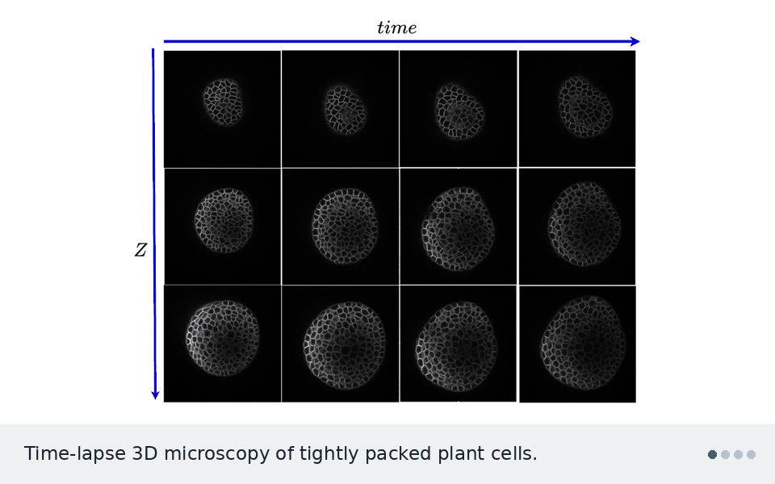
Plant cells are packed tightly in 3D, grow unevenly, and divide. DEGAST3D tracks each one across time-lapse microscopy. It describes every cell by the 3D graph of its neighbors and learns which graph in the next time point is the same cell. It also detects which cells divided.
The problem
Biologists image the shoot apical meristem (SAM) of Arabidopsis thaliana with confocal microscopy, in 3D stacks every few hours. To study growth, they need each cell’s lineage: where it went and when it divided. This is hard because of several things at once:
- Hundreds of cells are densely packed and look alike.
- Cells grow unevenly and divide along different planes in different layers.
- Deeper layers are noisy.
- The plant is moved between imaging sessions, so the stacks are not aligned.
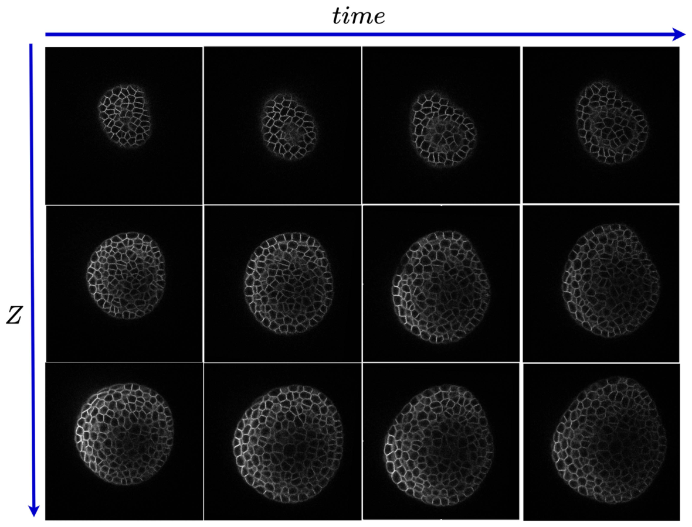
Why 2D tracking fails
Earlier methods track cells slice by slice in 2D. When the tissue tilts between time points, the same slice cuts the same cells at a different angle. The cells then look like different shapes and sizes, and 2D matching breaks.
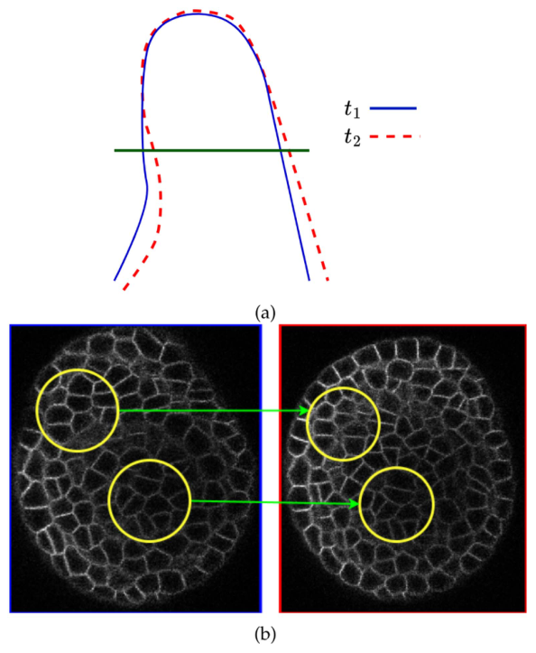
How DEGAST3D works
The pipeline works fully in 3D: segment, register, match cells, detect divisions.
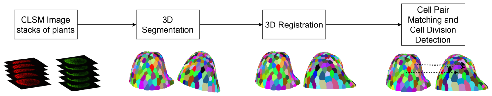
13D segmentation
Watershed methods segment each slice separately and lose how a cell continues across slices. DEGAST3D uses Cellpose3D, which predicts gradient maps along X, Y, and Z and returns a full 3D instance for every cell. It also keeps each cell’s polygonal shape, which division detection needs later.
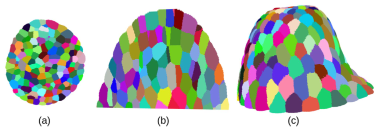
23D registration
Growth and handling shift and rotate the plant between sessions. DEGAST3D first finds a set of high-confidence matching cells, called seed pairs. It takes their point clouds and describes them with FPFH features. RANSAC then estimates the rotation and translation, and it tolerates the few wrong seed pairs. Once aligned, each cell only needs to be searched for in a small neighborhood.
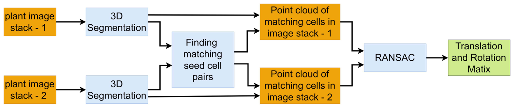
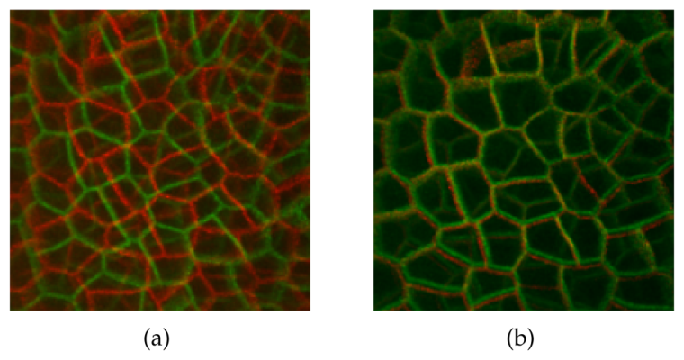
3Matching cells with learned 3D graph similarity
Cells grow and deform, and segmentation can split or merge cells. So aligned cells still do not overlap exactly. For each cell, DEGAST3D picks the n nearest cells in the next time point as candidates. That gives a small region of interest.
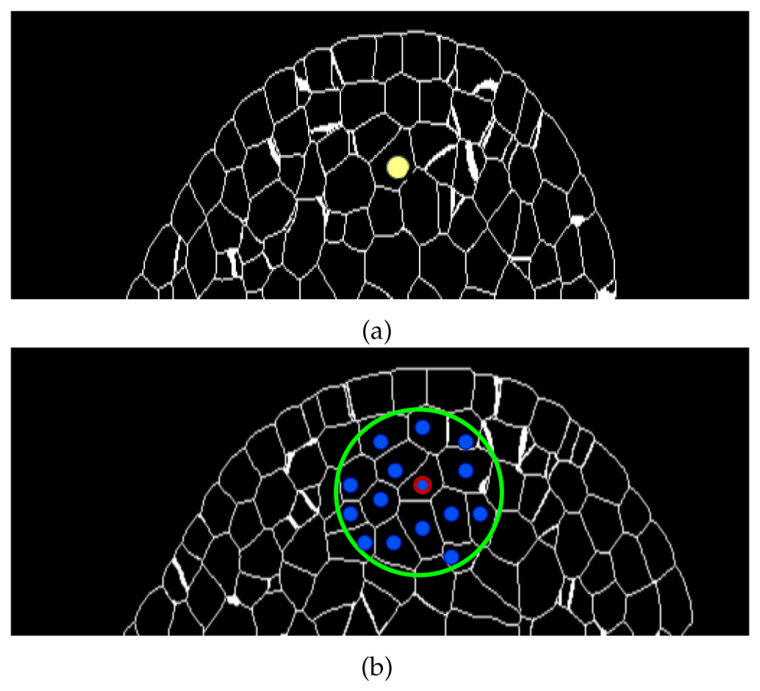
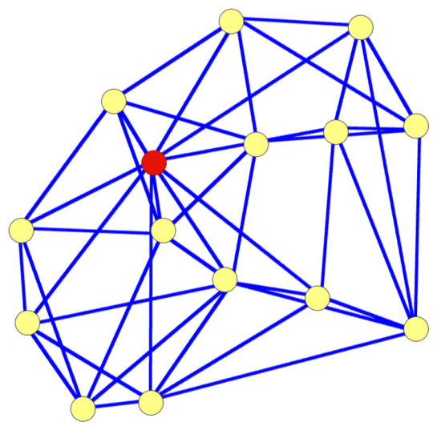
Each cell is described by a local 3D graph: its centroid plus its nearest neighbors, with every node linked to its k nearest neighbors. Older methods use a flat 2D star graph around the center cell. This 3D graph also captures how the neighbors sit relative to each other, and it stays small enough for fast inference.
A graph similarity model takes the 3D coordinates of two graphs. It extracts geometric features for every node and outputs two scores:
- A point-to-point similarity for each node pair.
- An overall similarity for the whole graph.
The candidate with the highest overall score is the match. An extra “no match” option handles cases where the true cell falls outside the candidate set.
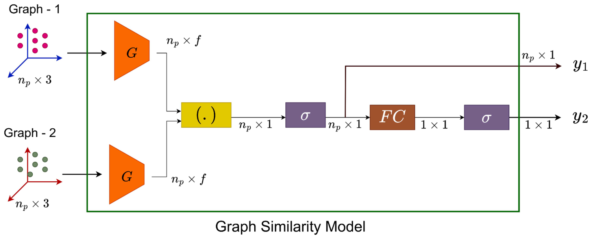
Training with partial labels. The dataset only gives correspondences for some cell pairs. In tightly packed tissue, the neighbors of two matching cells mostly match too. DEGAST3D uses this to create point-to-point labels:
- Matching cells with little deformation: all node pairs get label 1.
- Matching cells with some deformation: only node pairs within a distance threshold get label 1.
- Non-matching cells: all node pairs get label 0.
Both outputs are trained with binary cross-entropy.
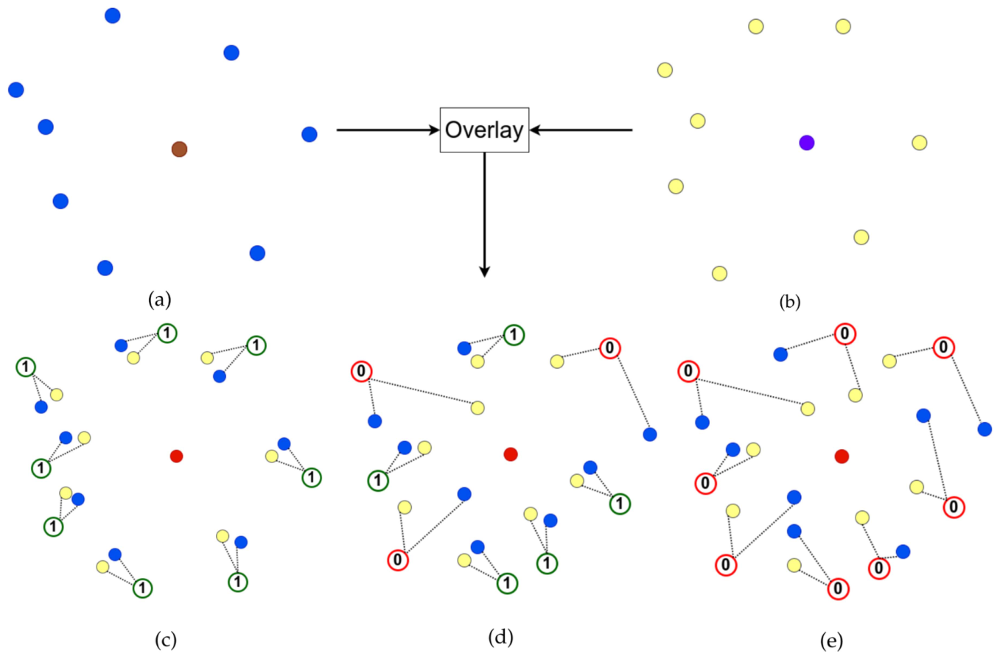
A few cells stay untracked after this step. They are linked using their positions relative to the cells that were tracked.
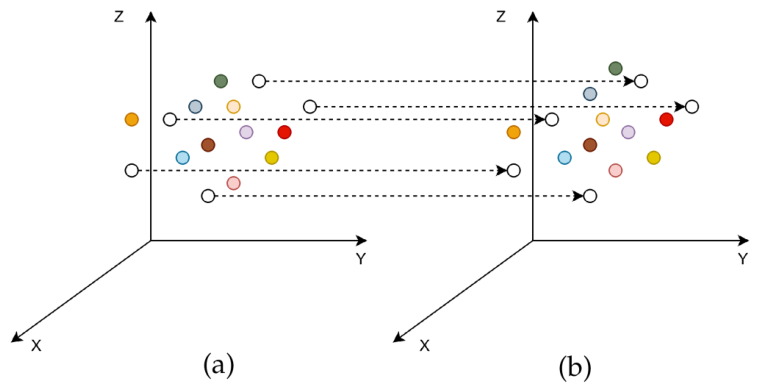
4Detecting cell division
Older detectors assume two daughters together match the mother’s area and outline in 2D. That breaks when divisions happen along different planes. DEGAST3D instead compares shapes in 3D. The mother’s point cloud and the two candidate daughters’ combined point cloud are voxelized and subtracted, and a 3D CNN (C3D) scores how well they match. This shape score is combined with local graph similarity to pick mother and daughter pairs.
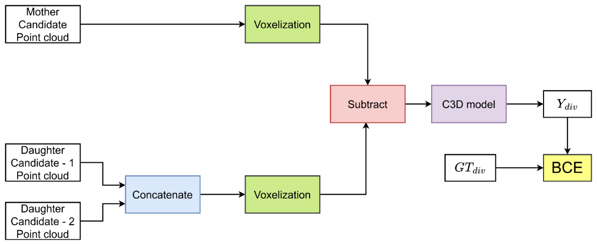
Results
The public confocal dataset has six plants. Each has about 20 time points, 4 hours apart. Each stack has about 200 slices of 512 × 512 pixels. Four plants were used for training, one for validation, and one for testing, with cross-validation.
- Cell matching: +6.83% precision, +5.96% recall, and +6.40% F1 over the previous best, with both methods using 3D registration.
- Division detection: competitive precision, with +15.38% recall and +14.78% F1.
- 3D registration on its own: swapping 2D registration for the proposed 3D registration raises the previous method’s matching F1 by 12.25% and its division F1 by 8.36%.
- Long-term lineages: for cells with ground-truth tracks of at least 16 hours, lineage accuracy beats the two compared methods by 23.03% and 12.96%.
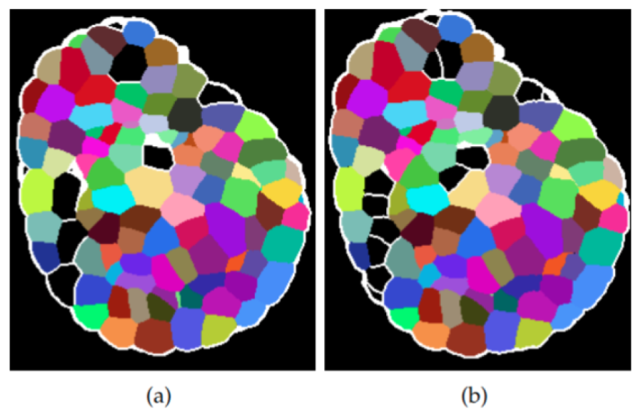
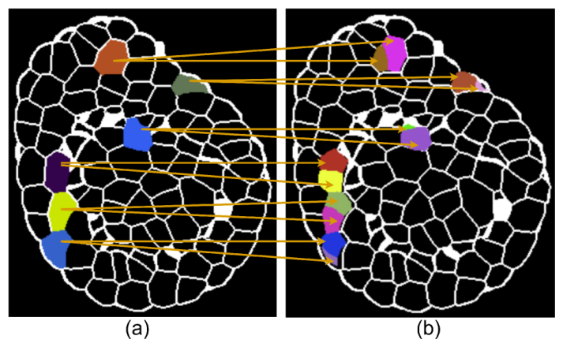
Code
The code is open source at github.com/ShazidAraf/DEGAST3D, with pretrained checkpoints for registration, tracking, graph matching, and division detection.
git clone https://github.com/ShazidAraf/DEGAST3D.git
cd DEGAST3D
conda env create -f environment.yml
# 1. 3D segmentation (also prepares stack and registration info)
python segmentation.py --main_dir "data" --plant_idx 6 --segmentation "cellpose"
# 2. Registration, tracking, and division detection for every pair of time points
python Inference_Tracking_Celldiv.py --main_dir "data" --plant_idx 6 --segmentation "cellpose"Results are saved in results/{segmentation}_{plant_name}/. Any segmentation method can be plugged in.
Citation
@article{islam2025degast3d,
title = {DEGAST3D: Learning Deformable 3D Graph Similarity to Track Plant Cells in Unregistered Time Lapse Images},
author = {Islam, Md Shazid and Dutta, Arindam and Ta, Calvin-Khang and Rodriguez, Kevin and
Michael, Christian and Alber, Mark and Reddy, G. Venugopala and Roy-Chowdhury, Amit K.},
journal = {IEEE Transactions on Computational Biology and Bioinformatics},
volume = {22},
number = {1},
pages = {343--354},
year = {2025},
doi = {10.1109/TCBBIO.2024.3525404}
}This work was supported in part by the U.S. National Science Foundation under grants OAC-2411453, OAC-1664172, DMS-1762063, DMS-2029814, and IOS-2055690.